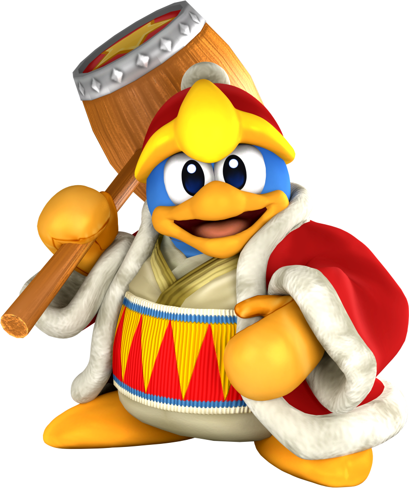
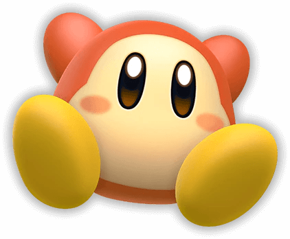
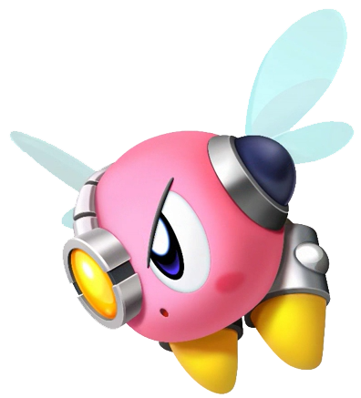

Lista de los Personajes
Lista de los Personajes
- Kirby
es un personaje de la gran empresa Nintendo y protagonista de una serie de juegos con su mismo nombre. Fue creado por Masahiro Sakurai. Hizo su primera aparición en 1992 en la consola portátil de Game Boy.

- Rey Dedede
El Rey Dedede es un personaje ficticio de los videojuegos de Nintendo y una especie de pingüino, apareciendo en la saga de Kirby. No es precisamente un villano, o al menos no uno con ambiciones muy grandes, pero le gusta hacer lo que él quiere sin importarle lo que otros de su reino quieran

- Waddle Dee
Los Waddle Dees son los habitantes más comunes de Dream Land. Algunos, pero no todos, de los Waddle Dees están afiliados al Rey Dedede, el gobernante autoproclamado de Dream Land, ya que son utilizados por él con regularidad. Ellos son un elemento básico de la serie Kirby, siendo el más común y ordinario enemigo que aparece desde el primer juego.
- Waddle Doo
Es una variante del Waddle Dee más poderosa, que cuenta con un solo ojo por el que puede lanzar rayos. Si Kirby consigue inhalarlo, conseguirá la habilidad Rayo. En Kirby 64 un Waddle Dee es poseído por Dark Matter y se transforma en un Waddle Doo.

- Bronto
es un enemigo con forma de mosca y de color morado/rosado, muy común entre los Juegos de Kirby, tan común como el Waddle Dee o más. A veces estará volando en zig-zag, otras veces estará quieto, esperando a que Kirby aparezca para intentar embestirle; pero comúnmente, vuela por determinados sectores sin causar daño alguno, al menos hasta que Kirby lo toque. Normalmente atacan en grupo. Si se absorbe, no se obtendrá ningún poder.